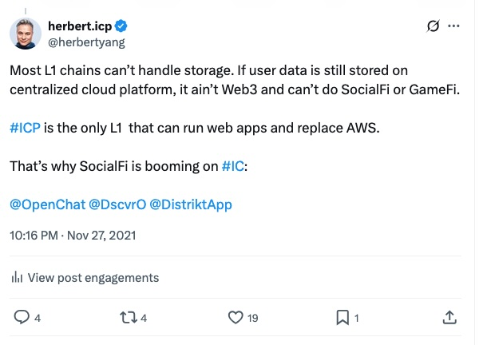

The Inconvenient Truth from AWS' Outage to Crypto's Fragility

A lot has been reported about the massive outage of Amazon Web Services (“AWS”) in the last few days. Many crypto exchanges went offline, and some blockchains had difficulty finalizing transactions.
Many crypto KOLs woke up to the brutal reality that the vast majority of L1/L2 blockchains are highly dependent on AWS or, in general, centralized cloud computing services. For example, 58.83% of Ethereum nodes are deployed on cloud compute platforms.

And 27.17% of those are on AWS.

Their surprise gives away their naivety and ignorance. This has always been the case in crypto. I’ve been saying this since 2021, from the day I left AWS to join DFINITY Foundation, the developer studio behind the Internet Computer Protocol (“ICP”), a leading L1 blockchain.

Decentralization rolls off the tongue for crypto people, but many of them don’t realize how fragile these crypto protocols, blockchains, and infrastructure services (exchanges and wallets) are at the mercy of cloud computing platforms like AWS, Google Cloud, and Microsoft Azure. If AWS can deplatform Parler, it can easily deplatform any blockchain whose nodes are running inside its EC2 virtual machines, along with thousands of not millions, of apps and tokens that run their own smart contracts on those chains.
Crypto protocols are much more vulnerable to the mood of the day of powerful centralized big tech firms than people are willing to admit.
AWS Outage is not the worst thing that can happen to a crypto project. It can do a lot worse by having its AWS account hacked, compromising its private key. Whoever has access to the private key controls the wallet and the assets in it. Saving your private key on a web service, regardless of its format, is a recipe for disaster. If your account has not been hacked, it’s only because its balance is not substantial enough yet (to motivate the hackers).
Among the major blockchains (small, exotic, niche L1 blockchains don’t have the critical mass to matter), there are only two exceptions that would come out unscathed from an AWS outage: Bitcoin and ICP.
Bitcoin miners consist of either individual validators running Bitcoin Core in their home basements or professional mining pools that aggregate massive hash power. Machines from centralized cloud computing platforms are not optimized for Bitcoin mining. Using AWS would defeat the purpose of Bitcoin fundamentalists.
ICP is a multi-blockchain infrastructure network that can be considered a decentralized version of AWS. It consists of many subnets (currently 47 globally). Each subnet is a blockchain with its own consensus and nodes (most subnets have 13 nodes). When the compute power of a subnet is full, ICP’s protocol will spin up new subnets to meet the growing demand. Technically, there is no limit how many subnets ICP can have. The nodes are run by independent IDC operators around the world, who are paid in $ICP tokens for providing the compute resources that power the smart contracts running on ICP. ICP logs more than 600,000 transactions per second (by Ethereum equivalent), far exceeding every other crypto L1/L2 by a long mile.

This speed is on par with traditional web services. It’s not possible yet to run an FPS game like League of Legends, which requires less than 50 milliseconds of latency, on ICP. But everything else, from a social network, email, Texas Hold ’em game, blog, SaaS, CRM, e-commerce, can all be running on ICP just fine, and that is already happening.
This subnet architecture is very different from Ethereum and Solana. In ICP terms, Ethereum is just one single subnet. A transaction cannot be finalized until all its nodes agree to it. This is very secure, but also very slow. That’s why Ethereum needs L2 blockchains (Arbitrum, Optimism, zkSync) to handle its workload, creating another conflict between Ethereum L1 and L2s.
In other words, ICP has solved the most difficult problem that keeps the crypto industry from getting mainstream adoption - horizontal scaling. Horizontal scaling is a given in the current good old Web2, but an almost insurmountable challenge for Ethereum and its wannabes. Several other L1 blockchains attempted to develop their own sharding/subnet features, but ICP is the only chain that has already implemented this in production since 2021.
Also, the ICP network has never been down since its mainnet went live on May 21, 2021. In the same period, AWS infamously went down at least 4 times: December 2021, June 2023, July 2024, and October 2025.
Another major feature of ICP is its actor-type smart contract - canister. With 500 GB stable memory, it’s a Docker-like virtual machine that can host the front-end of web services. It’s similar to an EC2 virtual machine from AWS. AWS can close down your EC2 without giving any explanation, but the canister is controlled by you ONLY.

You have 100% full discretion on who can access your canister - may it be your spouse, children, co-worker, collaborator, or another agentic canister. Though a canister smart contract is deployed on a subnet and gets its compute and storage from the node operator of that subnet, the node operator will not be able to “see” what’s inside your canister.
I’ve been blogging since 2006 and have used every blogging platform there has been, all the way starting from Geocities and Blogspot. I moved my blog to a canister on ICP a few years ago and have since then built many canister websites, such as this very newsletter. Can you tell it’s actually deployed, end-to-end, on a blockchain?
It’s a lot easier to build a website on Canister vs traditional EC2 from AWS. Figuratively speaking, AWS would require you to do 10 things to get a site up and running, while you only need to do 3-4 with ICP. It’s also a lot cheaper. I would have to pay at least $5~10/month to keep EC2 instances on my AWS account. My costs of keeping the same site running on a canister, as measured in cycles, are a tiny fraction of that.
There are many other powerful features of a canister, of course, beyond just hosting a website. For example, it can control a Bitcoin wallet and essentially let you do transactions on Bitcoin much faster and more cheaply without going through the Bitcoin mainnet. You can also achieve total anonymity, an extremely difficult feat to pull off on the Internet of 2025.
As a content creator, I don’t like paying ransom to any centralized, faceless, powerful platform for hosting my contents. I like to take things into my own hands and don’t mind going a few extra steps to keep it that way. I want my writing and photographs to persist for a very, very long time, like 500-10,000 years, not because they’re the next In Search of Lost Time, but because they can be an interesting footnote, if not a small chapter, in the grander human history that records real stories of real people and their emotions in our generation. I don’t want them to fizzle out together with those centralized platforms.
Because in the end, all the current big tech firms will fall into oblivion. The boy who wants to slay the dragon will become the dragon itself. It’s a very repeatable and predictable play.
So the question becomes, in the spirit of antifragility, where should you deploy your storage repository and publication outlet, making sure you take full control of the digital sovereignty of your creation and minimizing painful migration costs? A simpler way of asking this question is, where would you maintain your identity and personal branding?
While most people hang on to AWS because they don’t know any better, I am fortunate to work in a very edgy frontier industry where a paradigm shift is quietly brewing. I will place my bet on a truly decentralized blockchain platform. This nascent industry is still volatile and tender, but it has shown promising signs of a different kind of Internet, the one where sovereignty aligns with creativity and economic rewards align with proof of effort.
Let’s see who will have the last laugh, 100 years from now.